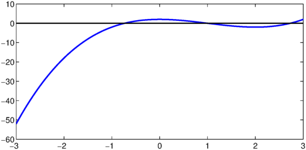
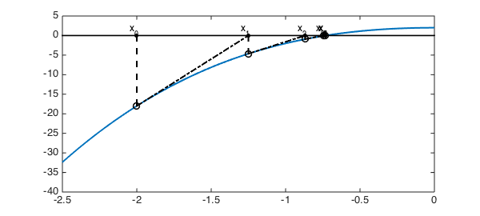

Newton's method, as the most fundamental root-finding algorithm, usually appears no later than Chapter 2 in most numerical analysis textbooks. It uses the first two terms of the Taylor series of a function $f(x)$ in the vicinity of a suspected root to find successively better approximations to the root, using the formula $$ x^{(k+1)} = x^{(k)} - \frac{f(x^{(k)})}{f'(x^{(k)})}. $$
Let's consider $f(x) = x^3-3x^2+2$, which has several roots, as we see in the next plot.
LW = 'linewidth'; lw = 2;
MS = 'MarkerSize'; ms = 18;
dom = [-3 3];
f = chebfun('x.^3-3*x.^2+2', dom);
plot(f, LW, lw), hold on
plot(dom, [0 0], 'k'), hold off

Here are the roots.
roots(f)
ans = -0.732050807568878 1.000000000000004 2.732050807568877
If we try to locate the leftmost root by Newton's method, we need to pick an initial guess, for example $-3$.
fprime = diff(f);
d = norm(f,inf);
tol = 1e-8;
xold = -2;
x = [];
i = 0;
plot(f, LW, lw), xlim([-2.5 0]), hold on
plot(dom, [0 0], 'k')
while(d > tol)
x = [x xold];
xnew = xold - f(xold)/fprime(xold);
d = abs(xnew - xold);
plot(xold, f(xold), 'ok')
strx = ['x_{' num2str(i) '}'];
text(xold - 0.05, 1.2, strx,'fontsize',12)
plot(xold, 0, '.k', MS, ms)
plot([xold xold], [0 f(xold)], '--k', LW, lw)
plot([xold xnew], [f(xold) 0], '-.k', LW, lw)
xold = xnew;
i = i+1;
end
hold off
root1 = xnew
root1 = -0.732050807568876

In the above plot, the solid black dots are the successive approximations of the root, while the circles are their projections on the curve, from which the Newton's method locates the next approximation along the tangent (black dash-dot lines). The following table tells us with no surprise that Newton's method is quadratically convergent.
n = size(x,2);
res = abs(x - xnew);
LogRes = log(res);
disp('iterations Logarithm of the step size')
for i = 1:n
fprintf('%5d %25.8f\n', i, LogRes(i))
end
iterations Logarithm of the step size
1 0.23740079
2 -0.65787813
3 -1.98646163
4 -4.28606060
5 -8.73432460
6 -17.61270705
7 -35.12736266
You may expect that the same order of convergence to appear when we approximate the middle root in this example.
d = norm(f,inf);
xold = 0.5;
x = [];
while(d > tol)
x = [x xold];
xnew = xold - f(xold)/fprime(xold);
d = abs(xnew - xold);
xold = xnew;
end
hold off
root2 = xnew
n = size(x,2);
res = abs(x - xnew);
LogRes = log(res);
disp('iterations Logarithm of the step size')
for i = 1:n
fprintf('%5d %25.8f\n', i, LogRes(i))
end
root2 =
1.000000000000002
iterations Logarithm of the step size
1 -0.69314718
2 -2.19722458
3 -6.98471632
4 -21.35961353
But now, this time we are evidently achieving cubic convergence! Is there something wrong? No, for it is to be expected if you notice that $f''(1) = 0$ in this example.